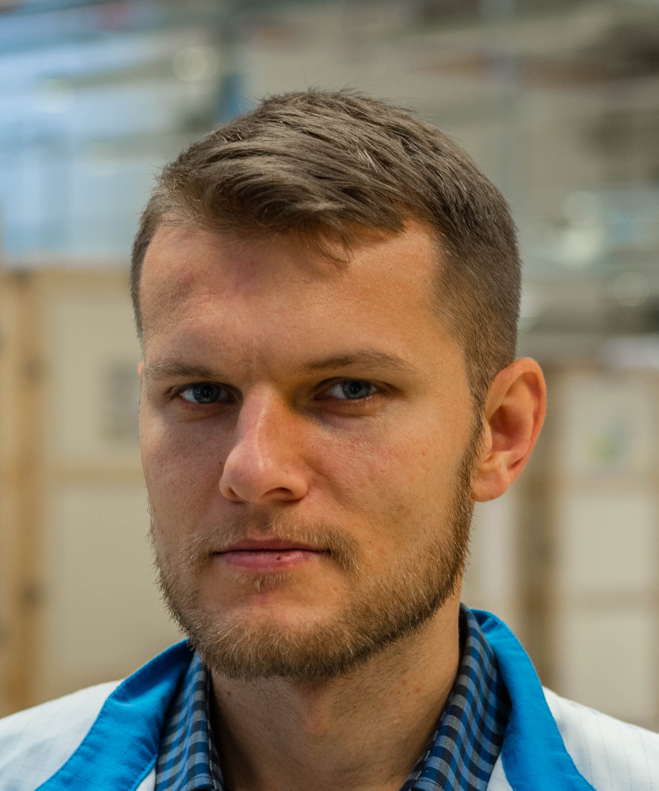

O mně
 Jmenuji se Pavel Kvasnička, narodil jsem se 28.11.1985 v Kolíně . Mým domovem se na bezmála 20 let stala obec Krakovany nacházející se 3 km od města Týnec nad Labem , kde jsem začal navštěvovat základní školu . Po ukočení základního vzdělání jsem se vzhledem ke své zálibě ve výpočetní technice a elektronice rozhodl dále studovat obor Mechanik elektronik se zaměřením výpočetní technika na Středním odborném učilišti technickém v Přelouči , který jsem ukončil maturitní zkouškou. Po středoškolských studiích jsem studoval na Západočeské univerzitě v Plzni Fakulty elektrotechnické obor Komerční elektrotechnika s vedlejším zaměřením energetika, nejprve v bakalářském a následně v magisterském navazujícím stupni.
Po úspěšném završení vysokoškolských studií jsem byl součástí týmu několika společností viz níže, kde jsem načerpal mnoho hard / technical a soft / manager skills.
Po poslední pracovní zkušenosti jsem se rozhodl dát si profesní pauzu a věnovat se rodině, studiu na Univerzitě Hradec Králové Fakulty informatiky a managementu obor Informační management a stavbě domu.
Rád se učím novým věcem a ctím dvě motta: "Dobří lidé na sobě neustále pracují." a "To jediné co ti nikdo nevezme, je to co ty sám umíš.". Mojí životní prioritou je rodina a mým největším koníčkem je můj syn, partnerka a IT.